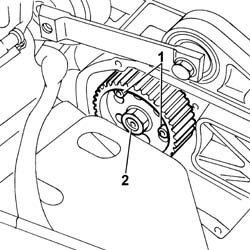
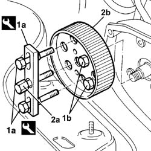

1060E30 PRESSURE PUMP drive PULLEY - R.R.
- Path
- Procedures > 10 ENGINE > 1060 DIESEL FUEL INJECTION SYSTEM > 1060E DIESEL PRESSURE PUMP > 1060E30 PRESSURE PUMP drive PULLEY - R.R.
- Kind
- repair procedure (removal / refitting; the operation number is the code)
- Applies to
- engines: 2.4 JTD 20V; all production periods
- Interactive page
- https://sloeber94.github.io/elrnDB-lThss/en/#/850513
Applies to: engines: 2.4 JTD 20V; all production periods
 Removing
Removing
 Refitting
Refitting- Position the vehicle on a lift.
- Open the boot and disconnect the negative battery terminal.
See in Op. 7055B54 PROTECTION/GUARD under engine - R.R.
See in Op. 4450B04 Right FRONT WHEEL (one) - R.R.
See in Op. 7055B42 FRONT WHEEL ARCH LINER (one), left or right - R.R.
See in Op. 7055B64 Engine compartment DUST SEAL in front wheel arch (one), left or right - R.R.
See in Op. 1016A10 SOUND-PROOFING COVER - R.R.
See in Op. 7040D50 ENGINE COMPARTMENT UPPER SOUND INSULATION SHIELD - R.R.
See in Op. 1048B44 RIGID air supply PIPE from heat exchanger to intake manifold - R.R.
See in Op. 1048A56 UPPER RESONATOR - R.R.
See in Op. 1092G10 Engine components single drive BELT - R.R.
See in Op. 1092G21 Engine components single belt FIXED TENSIONER - R.R. with belt removed
See in Op. 1092A10 Crankshaft PULLEY - R.R.
See in Op. 1032D12 Timing system protective COVER(S) - R.R.
See in Op. 1032B10 TOOTHED timing BELT - R.R. for timing adjustment or replacement
1. Tighten the two bolts securing the pressure pump pulley.
2. Undo the nut fixing the pressure pump pulley to the pump shaft.
- Remove the two bolts securing the pulley positioned previously.

Applies to: engines: 2.4 JTD 20V; all production periods
1. Position the extractor (1a) and tighten the pulley fixing bolts (1b) once again.
 | Description | Code | Function |
|---|---|---|---|
1a | Extractor | 1.871.000.800 | Removing pressure pump pulley |
2. Acting on the extractor bolt hexagonal head (2a), release the pulley (2b) from the tapered housing in the pressure pump drive shaft, then remove the pulley.

Applies to: engines: 2.4 JTD 20V; all production periods
Refitting
Removing- Fit the pressure pump pulley on the pump drive shaft.
- Fit the two pulley lock bolts.
- Tighten the nut fixin the pressure pump pulley to torque.
 | Value - daNm | Fastening | Component | Ø |
|---|---|---|---|---|
. | 5 | Nut | PRESSURE PUMP CONTROL PULLEY | M14 |
- Remove the two pulley lock bolts.
See in Op. 1032B10 TOOTHED timing BELT - R.R. for timing adjustment or replacement
See in Op. 1032D12 Timing system protective COVER(S) - R.R.
See in Op. 1092A10 Crankshaft PULLEY - R.R.
See in Op. 1092G21 Engine components single belt FIXED TENSIONER - R.R. with belt removed
See in Op. 1092G10 Engine components single drive BELT - R.R.
See in Op. 1048A56 UPPER RESONATOR - R.R.
See in Op. 1048B44 RIGID air supply PIPE from heat exchanger to intake manifold - R.R.
See in Op. 7040D50 ENGINE COMPARTMENT UPPER SOUND INSULATION SHIELD - R.R.
See in Op. 1016A10 SOUND-PROOFING COVER - R.R.
See in Op. 7055B64 Engine compartment DUST SEAL in front wheel arch (one), left or right - R.R.
See in Op. 7055B42 FRONT WHEEL ARCH LINER (one), left or right - R.R.
See in Op. 7055B54 PROTECTION/GUARD under engine - R.R.
See in Op. 4450B04 Right FRONT WHEEL (one) - R.R.
- Top up the engine coolant, following the instructions in the description:
See in Op. 0010T21 ENGINE COOLANT - Check density and top up if necessary
- Connect the negative battery terminal.
- Remove the vehicle from the lift.
Topics linked from this page (14)
- 0010T21 ENGINE COOLANT - Check density and top up if necessary
- 1016A10 SOUND-PROOFING COVER - R.R.
- 1032B10 TOOTHED timing BELT - R.R. for timing adjustment or replacement
- 1032D12 Timing system protective COVER(S) - R.R.
- 1048A56 UPPER RESONATOR - R.R.
- 1048B44 RIGID air supply PIPE from heat exchanger to intake manifold - R.R.
- 1092A10 Crankshaft PULLEY - R.R.
- 1092G10 Engine components single drive BELT - R.R.
- 1092G21 Engine components single belt FIXED TENSIONER - R.R. with belt removed
- 4450B04 Right FRONT WHEEL (one) - R.R.
- 7040D50 ENGINE COMPARTMENT UPPER SOUND INSULATION SHIELD - R.R.
- 7055B42 FRONT WHEEL ARCH LINER (one), left or right - R.R.
- 7055B54 PROTECTION/GUARD under engine - R.R.
- 7055B64 Engine compartment DUST SEAL in front wheel arch (one), left or right - R.R.